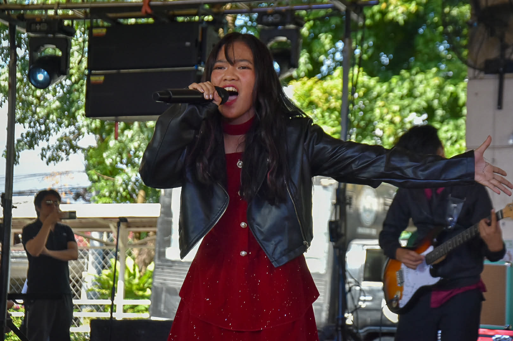
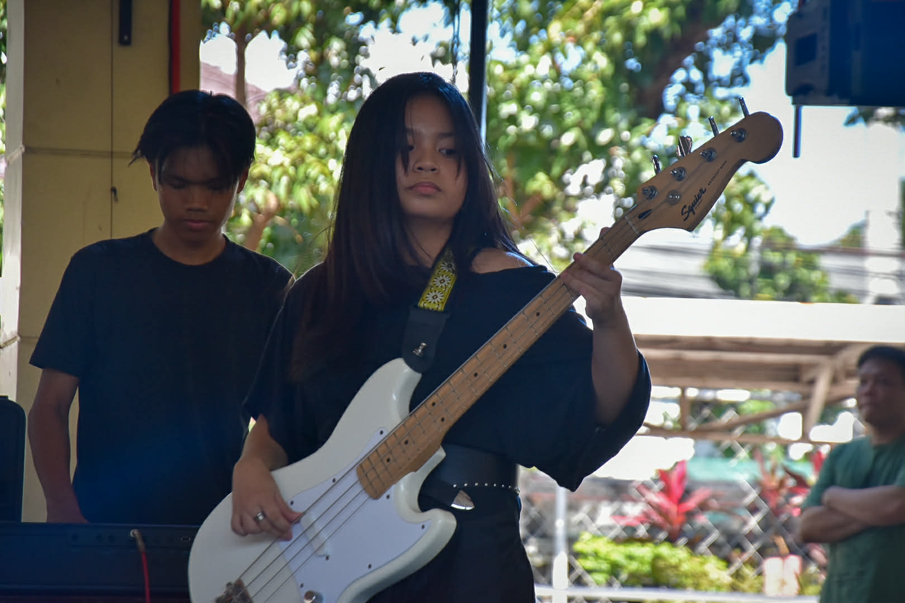

Reflection on BOTB!
What is the most important thing I learned from the event?
The most important thing I learned from the Battle of the Bands was how music can be a powerful way for people to express themselves. Even though I watched the performances through videos instead of in person, I was still amazed by the talent of the bands. Each group had its own unique style and stage presence. Their performances showed how passion and dedication can create an impressive musical performance.
How can I apply what I learned in real-life situations?
I can apply this lesson by appreciating the effort and creativity that musicians put into their craft. It reminded me that talent alone is not enough and that practice is necessary to improve skills. This idea can apply to many areas in life, such as academics, sports, or hobbies. With enough dedication and effort, anyone can improve and achieve their goals.
Did I actively participate in the event? How?
Although I was not able to attend the event in person, I still participated by watching the performances through videos. I followed the event and supported the students who performed. Watching their performances allowed me to appreciate their hard work and dedication. I was also very happy and proud that Grade 9 won the championship.
If I were to teach this topic or subject to a classmate, how would I explain it?
If I were explaining this to a classmate, I would say that Battle of the Bands is a competition where different bands perform music to showcase their talent and creativity. Each band prepares songs, practices their instruments, and performs in front of an audience. The performances are judged based on musical skill, stage presence, and overall performance. It is an exciting way for students to express themselves through music.
Why is it important to have events like this?
Events like Battle of the Bands are important because they give students a platform to showcase their musical talents. They encourage creativity, confidence, and teamwork among performers. These events also entertain and inspire other students in the school community. Overall, they help create a lively and supportive environment for artistic expression.

